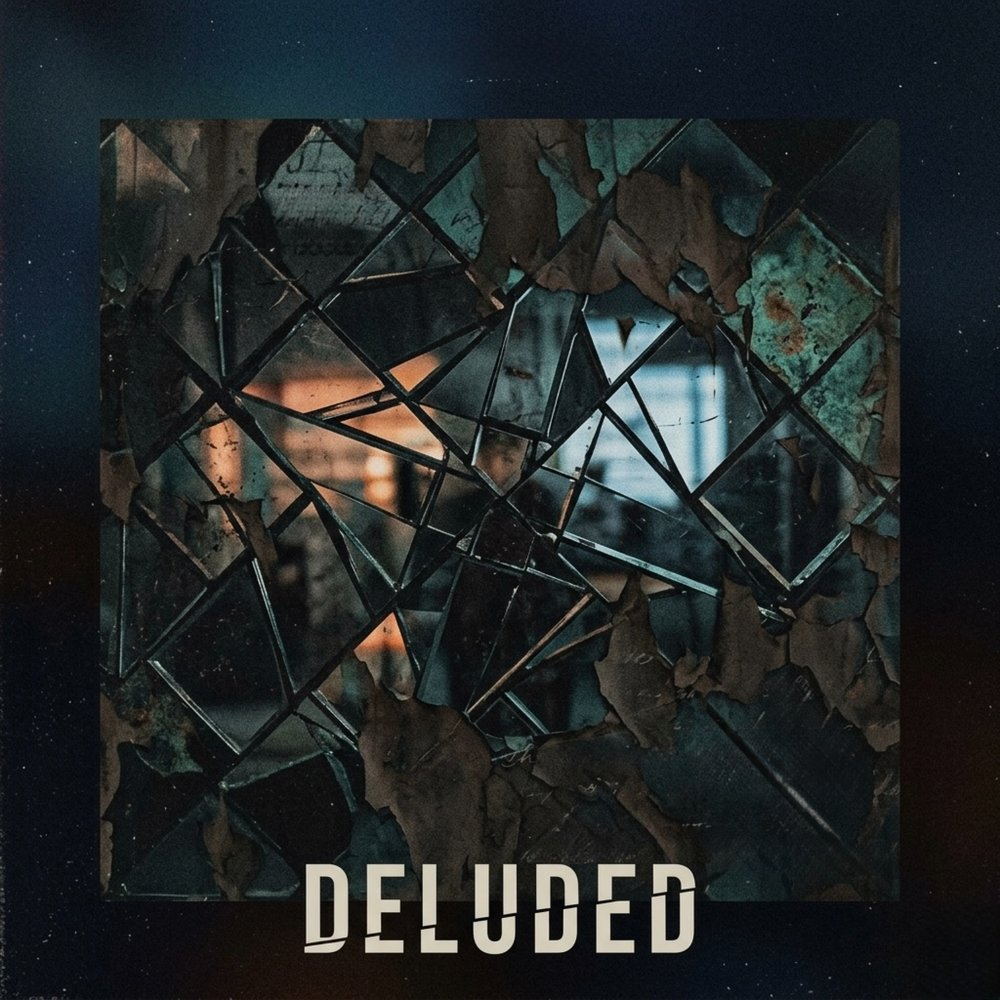
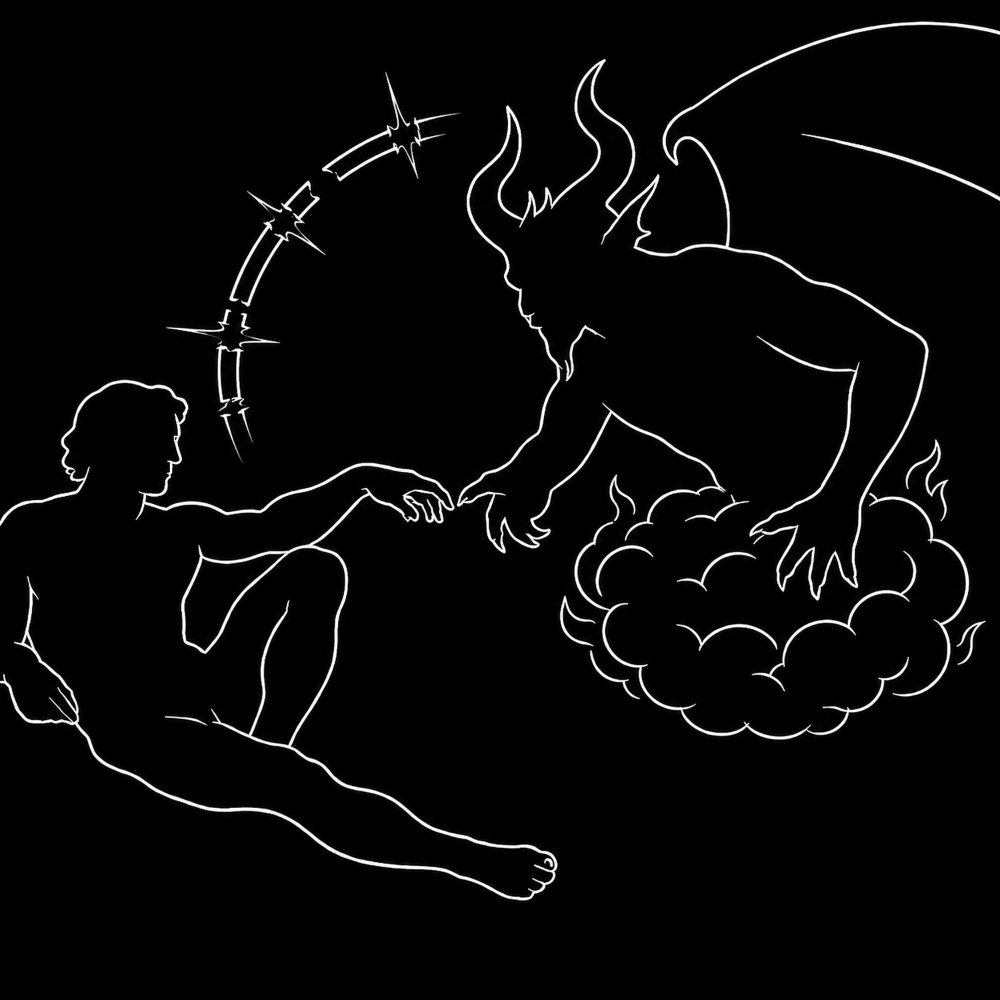

I. SINGULARITY
Entropy, gravity, and the void, set to a pulse.
Entropy Love·Gravity·Distilling the Void·Self-Checkout·Defect Condensate·But I Know·A Trillion Infinite Nothings
𝄞𝄢
FaXto is an experimental electronic project — absurdist in spirit, liturgical in form. It takes the universe at its word: a Grand Cosmic Void that promises nothing and explains less, and it sings back regardless. Meaning isn't found here so much as declared, in full view of its absence.
The songs read like liturgy for people who lost the faith and kept the grammar — sacred forms run through machine production. Each record is less an argument than a confrontation: faith, doubt, and the silence behind both, given a pulse.
This is the home for that work. Everything is below. More is coming.
Entropy, gravity, and the void, set to a pulse.

An absurdist liturgy — belief and its undoing, voiced at once.


